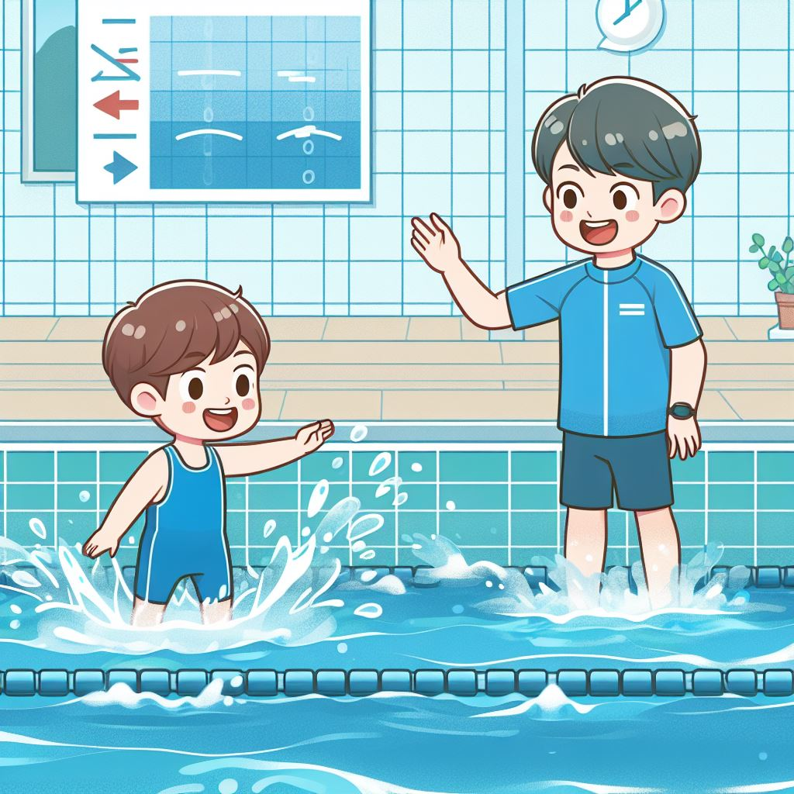
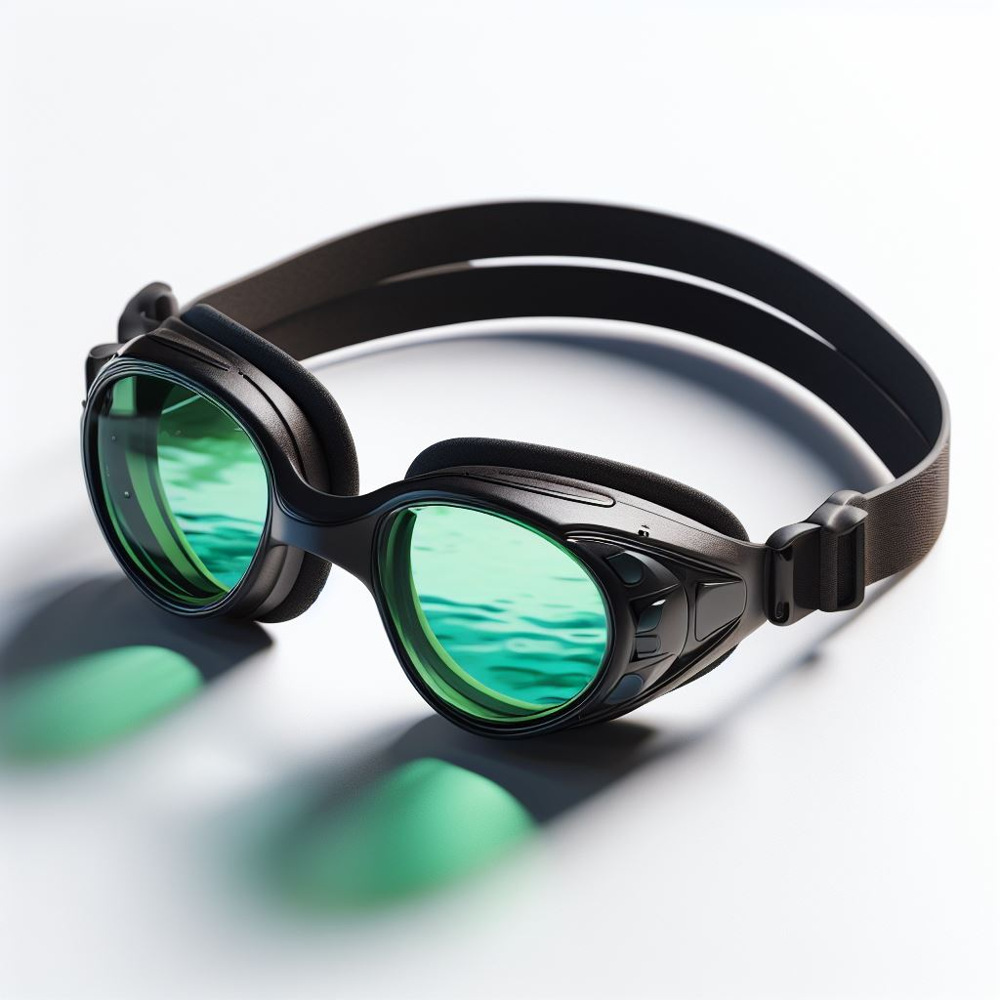

Beneficios para saúde
A natação é benéfica para a saúde devido ao seu exercício de baixo impacto, melhora a aptidão cardiovascular, fortalece músculos, promove boa postura e coordenação, além de reduzir o estresse.

Futebol no Brasil
A natação chegou ao Brasil no final do século XIX, inicialmente associada a clubes de remo. No início do século XX, a modalidade se popularizou como esporte competitivo, com a realização de competições e inclusão em clubes esportivos.

Prática do esporte
A natação é praticada em piscinas, envolvendo movimentos de braçadas, pernadas e respiração. Pode ser recreativa, de lazer ou competitiva. O treinamento inclui aprimoramento da técnica, resistência e força, com planos de treinamento variados.